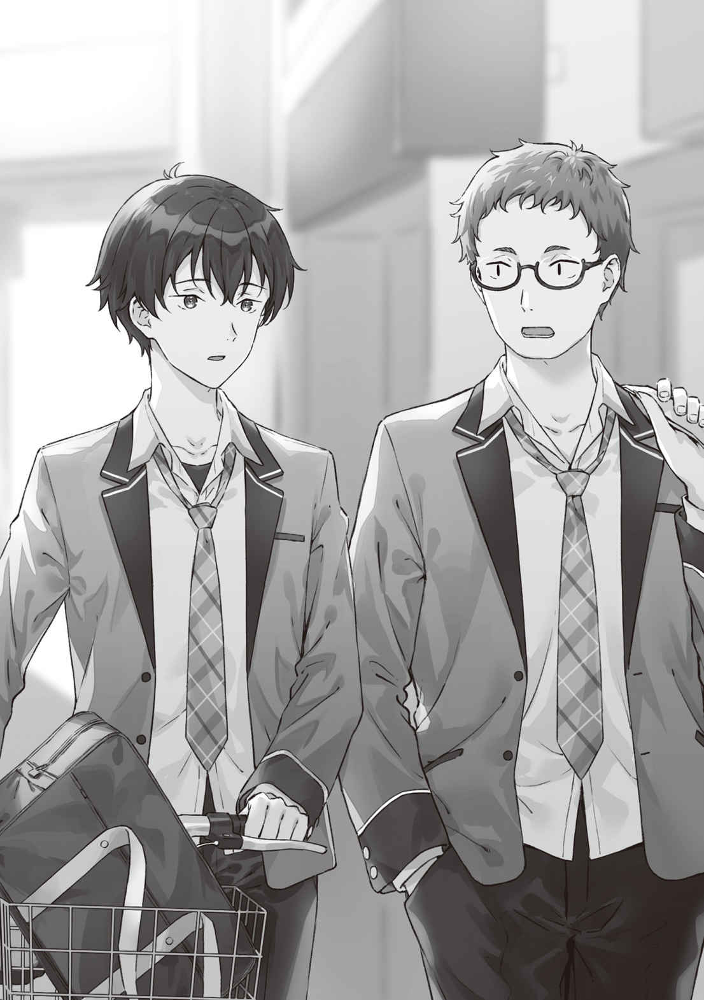
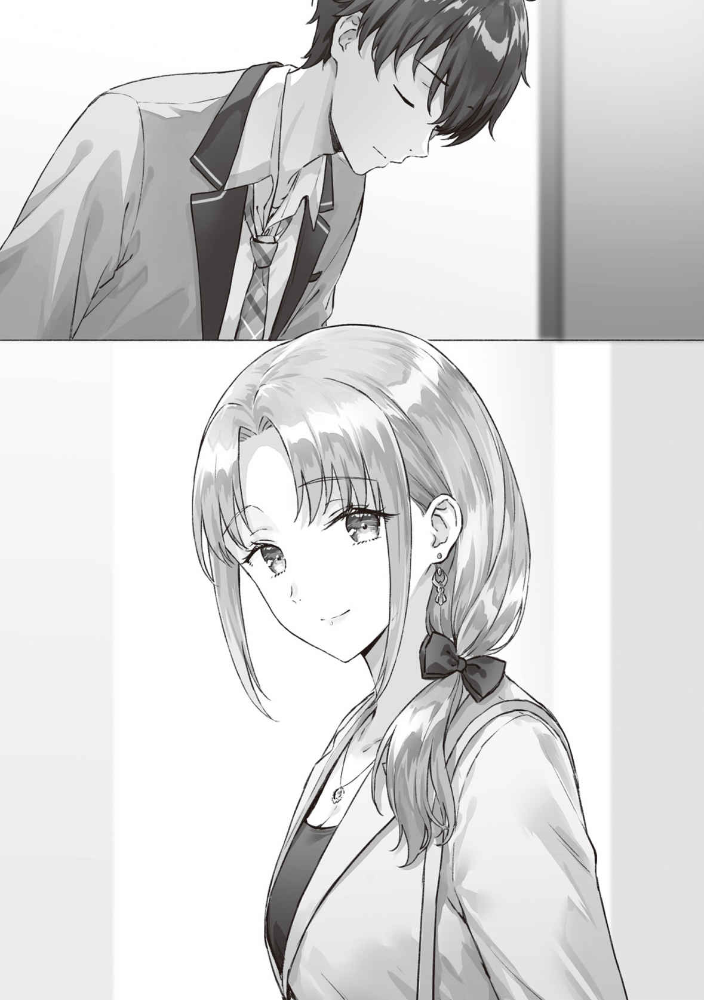

●10月21日（木曜日）
「だぁぁ！ 食ったものが口から出そう……」
その脇で俺も腰を落として見上げる。
空が高い。
視界いっぱいに広がっている青いキャンバスの上を、目の粗い
「さすがに五時間目の授業でサッカーはきついね」
きついと言いつつも涼やかな表情を変えない
体育の時間は隣り合うクラス同士で合同だ。男子は男子、女子は女子でひとクラスになる。丸も新庄も俺と吉田の隣のクラスだから体育のときは一緒になる。
とはいえさすがに授業中、普段はそんなに話もできない。
ただ、今日はたまたまサッカーだった。３つのチームに分かれて試合するとちょうど良いくらいの人数なわけで、だからこうして余るチームの生徒は多少のおしゃべりタイムが生じるのだ。
最後に腰を下ろした丸はさすがに元野球部だけあって息も切らしておらず、座った後にこう言った。
「なまってる体にはちょうどいい」
ぜえぜえ息をついていた吉田がげんなりした顔になる。
「こっちは丸みたいにキツめの運動なんてやってなかったっての」
「部活のあった時期は早めに飯を終わらせて昼練をしていたからな。これくらいでは運動とも呼べないぞ」
「はいはい」
「吉田は食べ過ぎじゃないの？」
俺は昼休みを思い出しながら言った。
吉田は今日も購買で買ってきた弁当を食べていた。ふたつ。さすがに弁当ふたつは多すぎだろう。
「ぎりぎりで行ったら、どっちも半額だったんだよ。だったら買うだろ。半額だぞ、半額。いつもと同じ金額で倍も食べられるんだぜ」
丸と新庄の視線の温度が３度は下がった。
「食べ過ぎだ」
「食べ過ぎだね」
俺も同意見だった。
「しかし、
吉田がうっと言葉を詰まらせた。
気持ちが悪くなったから──ではない。図星を指されたのだろう。
「えっ、吉田。彼女と
周りで座り込んでいる休憩中チームのみなに聞こえないようにだろう。
「いや、喧嘩っていうか……」
「登下校を一緒にしているのは見たが？」
と、これは丸。なるほど、そこは一緒なんだ。
やや口籠もった末に、吉田は寝転がって空を見上げながら言う。
「わかんねーんだよな」
「なにが？」
たぶん、聞いてほしいのだろうとさすがに推測がついたので促してみる。
吉田がぽつりと言う。
「家に入れてくれなくなったんだよ」
「ほう。なるほどな」
丸がわかっているぞというニュアンスで言った。なにがなるほどなんだろう。
「つまり吉田が牧原の家で何かやらかして出禁になったわけだ」
「ちげーよ！」
吉田ががばっと起き上がって叫んだ。周りが思わず反応してこちらを見る。審判をしていた担当教師がじろりと
こうして
ふたたび寝転がった吉田が声のトーンをひとつ落として話し始めた。
吉田と牧原さんは、時々、放課後に牧原さんの家で受験勉強をしていたのだそうだ。
夏あたりからだというから、もう２か月ほど前からということになる。
ところがここに来てまったく家に入れてくれなくなった。喧嘩、というほどふたりとも険悪になっているわけではないらしいが、最近は家に行きたいそぶりを見せるだけで
「受験勉強に集中したいからじゃないの？」
俺としては自分と
他人がいると気が散る、と思ったわけなのだが、次の
「そーかなぁ。でも、ふたりでファストフードの店に寄って勉強とかは今までどおりしてるんだよな」
つまり、吉田も牧原さんも共に勉強すること自体は問題ではないということだ。
「それにさあ、嫌なら言ってくれればいいじゃん？ なんでいきなり黙って不機嫌になるわけ？」
わからない、なぜだ、と吉田は頭を抱えている。
「たとえ恋人同士でも同じ空間に居たくない時間だってあるだろうし。そんなに気にすることないんじゃない？ 登下校とか一緒だって言うならさ」
新庄が言うと、なぜか経験に裏打ちされた発言に聞こえる。俺としてはそういうこともあるかもな、という感じではあった。
だが、
「牧原の家で勉強していたと言っていたな？」
「そうだけど？」
「それは毎回か？ それとも、吉田の家でふたりが勉強していたこともあるのか？」
「ない、けど」
その答えが意外だったので、俺は「なんで？」と
「俺んち、あいつんちとちがって狭いし汚いしボロくてさ。呼んでも、ゆっか、喜ばないと思うんだよ」
なんでも牧原さんは両親の稼ぎがかなりいいらしく、家もそこそこ広いらしい。それに対して、吉田の家は２Ｋのアパートで寝室は弟と共用だった。
そんなことを言った吉田に対して、丸は腕を組みながら
「それだな」
「へ？」
「おまえ、しかもその牧原を誘わない理由を彼女に言ってないだろう？」
「そりゃまあ。恥ずかしいし」
「だからだ」
「えっとさ、吉田。狭いからとか汚いからとかそういうの、
吉田が身を起こした。
「けど？」
「牧原さんにしてみれば、吉田が自分を受け入れてくれてない、と感じているんじゃないかな？」
「あいつを……受け入れてない？」
「良い環境だから
「う、そうか……」
それに吉田を家に招くってことは、牧原さんも、掃除したり清潔にしたり、いろいろ気を使っているわけで。受験勉強に集中しなきゃいけない今、彼女にだけその負担をさせてることに無自覚なのはまずいんじゃないかな──と、そんなことも添えて言ってみた。
こう考えれば理屈は通る。
当たってるかどうかわからないけれど。考えられるとしたら、そのあたりなんじゃないかな。
「
丸が感心したとばかりに言った。
「なるほどねぇ。いや、なかなかの女心マスターだね、浅村くん」
新庄にまで感心されてしまった。
いやそれは大げさだ。それに女心マスターってなんだ？
「どちらかというと浅村は女心に詳しいわけではなくて、公平さが担保されてないと不安になるタイプなのだろうな」
丸が言った。
たぶん丸の言うとおりなのだろう。どう考えても女心に関しては彼らのほうが詳しそうだし。それはまあ
恋愛小説に描かれている心理に体感が伴ってきたというか。少なくとも以前と比べたら雲泥の差ではあるように自分でも思う。ただ、あくまでも「以前と比べて」だから、俺と
それに、いちばん知りたい女性の心はいまいちわかっている自信がないわけで。
「いやでもさー。あの部屋を見せるのは恥ずかしいし」
「吉田──」
「
ぐ、と吉田が言葉を詰まらせる。
「女子の部屋だぞ。同性ならばまだしも、異性にそう気楽に見せられるものでもあるまい。社交慣れしている性格ならともかくだ。牧原さんはそこまで明けっぴろげな性格でもないように思うが？」
「それは、そうだけど……。うーん、そうか……」
考え込む吉田を見て、丸はそれ以上は何かを言うことをやめたようだ。
考え込む吉田に休憩の終わり間際に丸はひとことだけ付け足した。
「おまえが家に招待しない理由を言わないから、牧原も何も言わずに不機嫌さだけを醸し出すことになる。だがそれは悪手だぞ」
丸の言葉に吉田が黙ってうなずいた。
今日はバイトのない日だからこのまま家に帰るだけ。
なのだけれど、書店への寄り道をするかどうかですこし悩む。でも、寄ると新刊が出てることに気づいて、買ってしまいそうだ。やはり家まで直行したほうがいいだろうか。
「おう、
廊下に出た途端に声を掛けられて振り返れば見知った四角い顔があった。
「丸も？ 早いね」
「部活がなければこんなもんだぞ」
「そういえばもう引退してたっけ。すっかり忘れてたっていうか、意識してなかったかも。これまで帰り際に会うことなかったし」
「ま、クラスが違えば微妙に時間がずれて会えなくなるものだ」
「それもそうか」
「今日はたまたまだな。せっかくだ。まっすぐ帰るなら、駅まで歩かないか？」
「いいね。じゃあ、自転車を取ってくるから校門で待ってて」
おう、という返事を背中で聞きながら、早足で昇降口へと向かう。自転車置き場に寄るぶんだけ俺のほうが時間がかかる。待ち合わせた校門から、そのままふたり並んで駅へと向かって歩いた。こうして
「久しぶりだな」
「だね」
同じタイミングでどうやらふたりとも同じことを考えていたらしい。
「
いきなり名前を出されて、心臓がどきりと跳ねる。
「えっ？」
「最近、ふたりで仲良く登校しているんだろう？ 下校もいっしょだと思ったのだが」
よく知ってるなあ。
とはいえ高校なんてそんなに広い世界でもない。まして綾瀬さんは目立つ生徒だ。注目されていて当たり前か。
「彼女には彼女の友人がいるからね」
「ほう、余裕だな」
余裕って、そんなふうに見えるのかな。というか、丸はどこまで気づいてるんだろう。

「まあ、高校生にもなって妹、妹でもないか」
「そういうこと」
「なのに、登校するときはいっしょに仲良く、なんだな」
ぐ、と言葉に詰まる。
恋人同士だからだ、と断言してしまおうかと一瞬思う。
これは、もうバレても良い気持ちになったのか──って暗に聞いてるんだろうな。まあ、俺たちふたりともそんな心持ちになっているとは思う。俺も、
「
「どうかな。おれはひとりっ子だからな。まあでも
「ああ、奈良坂さんは弟がたくさんいるんだっけ」
「うむ。それはもうたくさん、だな。最近、『弟たちが手を
「へえ……」
「恥ずかしいからイヤ、なのだそうだ。子どものときはともかく、どうしてもある程度の年齢になるとな。そういうものなのだろう。とくに相手が異性だとな」
思わぬところで奈良坂家の
「同じクラスになったからかな。丸も奈良坂さんとだいぶ仲良しになったね」
「……まあ、会話はする」
「そっか」
「話を戻すが、だから姉弟でさえ、異性だと言えないこともあるものだろう」
それはわかる。
とくに思春期ともなれば言えないことも増えてくる。まあ、ややこしいのは現代では異性という言葉は遺伝子だけを指すのではないということだし、心の悩みは性差だけが原因ではないということか。だからこそ、心の内側を打ち明けられる人を見つけられるかどうかは大事なことなわけで。
「丸はさ」
「うん？」
「ああ、いや、これは一般論としての思考実験みたいなものなんだけどね」
「なるほど。つまり、『トモダチの話なんだけど』というやつだな」
わかったような顔でうなずきながら丸が言った。
含みのある返しをされてしまったような気がするけれど、駅までもうすこしで着いてしまうから今は突っ込まないことにする。
「体育の時間のときさ、
「
「そうそう。『おまえが理由を言わないから、相手も言わなくなる』ってやつ」
「ああ、言ったな」
「不機嫌そうなパートナーが理由を打ち明けてくれない、っていう悩みをもってるとしてさ。自分のほうに何も原因が思いつかない場合はどうしたらいいんだろう？」
「
そうか。確かに。
となると、
……いや待て。それだと、
「じゃあさ。周りは原因を知っているみたいなのに、自分だけ知らないって場合は？」
「それも吉田と同じだな。俺たちは気づいた。吉田は気づかなかった」
「あー……」
「意外と当事者は気づかないものだぞ。だからこそ外からの目が必要になる」
「外からの目？」
「閉ざされた世界の問題を浮き上がらせるのはいつだってマレビトだ。神話の時代からそう決まっている。共同体には異物が必要なのだよ。不滅の都市ダイアスパーに《道化師》が必要だったようにな」
「カウンセリングに古典ＳＦの名作をもってこなくても……」
ちなみに出典は『２００１年宇宙の旅』の作者アーサー・Ｃ・クラークによる名作古典ＳＦ『都市と星』だ。
「あれはおもしろかったね。でも、何億年も未来の地球の話を参考例にできるかな？」
「愚者は経験に学び、賢者は歴史に学ぶ、というからな」
「架空の未来史だけど」
「ウソから出たマコトという言葉もある」
「さすがにその理屈は
「ほんとうは似た理屈を秋アニメで見た」
「うん。納得した」
最後は
つまり問題の内側にいる者には見えないものもあるってことだ。でも、そうなるといよいよ俺がいくら考えてもわからないってことになる。どうしようか。外からの目……外からの目、ね。
「なあ、
「確かにそうかもね」
駅が見えてきて
「
別れ際に丸は
広い背中が改札口の向こうへと消えていく。
改めて、頼りになる友人だなと思う。久しぶりにじっくり話せてよかった。
相談する誰か、か。
となると……。あのひとしかいないか。
俺の心に浮かんだ、綾瀬さんの事情を知っていそうなもうひとりの人物。
親父の再婚相手にして、綾瀬さんの実母──
いつもは帰宅したときにはもう出勤してしまっているけれど、今日は、授業が終わってすぐに学校から出てきた。
腕時計で時刻を確認する。
午後４時をすこし回ったところだ。今ならもしかしたらまだ家にいる……。
信号が切り替わるや俺は自転車にまたがるとマンションに向かって走りだした。
「そんなに急いで……」
間に合ったと俺は
家の扉を開けたとき、目の前にちょうどハイヒールを履き終えた亜季子さんが立っていたのだ。汗だくになって息を切らしていた俺に戸惑い顔で「どうしたの？」と問いかけてくる。
「いえその……。ちょっと聞きたいことがあって──」
亜季子さんが俺の言葉に耳を傾けつつ右の爪先を
「──綾瀬さ……
え？ という表情。顔をあげて亜季子さんは改めて俺の目を見る。それから左の手首に
「立ち話には向かなそうね。うん。10分くらいならいいわよ」
ヒールを脱いで亜季子さんが玄関ホールへとあがる。そのままダイニングのほうへと向かった。俺も慌てて後を追う。
テーブルにふたり向かい合って腰を下ろした。
「うん。いいわよ、話して」
「えっと……」
いざ話そうとして俺は言葉に詰まる。
どう切り出せばいいんだ？
「最近……ちょっと心配で」
言ってから、この
けれど、俺のこの半端な台詞を聞いた瞬間に
「心配しなくても家族の内側の不和じゃないわよ」
なにか俺の思考がぜんぶ読まれていたんじゃないかと思うような言葉だった。
ん……？ 家族の『内側の』不和じゃない？
ということは──。
「
「え、あ。……はい」
「でしょうね。あのひとが
「沙季の」
「ええ。だから太一さんとしては沙季との約束を
「ええと」
綾瀬さんとしては俺に知られたくないことなのか。ということは俺が無理に聞き出すのはまずいのかな。
「でも家族の話なのに自分だけ知らされないのは、つらいわよね」
「いいんですか」
おそるおそる言うと、亜季子さんはまた溜息を落とした。
「あの子って、脇が甘いのよ。太一さんには口止めしたくせに、わたしには何も言わなかったんだもの」
「それは亜季子さんだったら言わないだろうと思ってるからなんじゃ……」
「でしょうね」
「内緒にします」
「無駄だと思うわよ」
え……。
「だって、
「それは……」
約束できないかもしれない。俺は
「むずかしいかも、しれません」
「でしょ。だからここで『本人にはわたしが言ったってことは絶対に内緒にすると約束してくれる？』って言っても、悠太くんの行動が変わってしまった瞬間にバレるでしょ」
「確かに」
「もちろん、わたしから聞いたからではなくて、悠太くんが自力で察したように振る舞えるなら、隠し通せるかもしれないけど……」
「う、それも自信ない、ですね」
それに、万が一にも
そのあたりの不安も口にすると──。
「そこはだいじょうぶ。わたしとは約束しなかったわよ。って返すから」
「それは開き直りって言うんじゃ……」
「その代わりに次はないわね。同じことが起きたら、今度はきっちりわたしにも
お
「だから、一生に一度しか使えない言い訳だけど。ここで使う覚悟はある？」
はっとなって俺は亜季子さんの目を見つめ返してしまった。この先、おなじように綾瀬さんが悩むことがあって、亜季子さんだけには打ち明ける。そんなことがあるかもしれない。けれど、そのときにはもう亜季子さんは教えてくれはしないってことだ。
俺は考える。その切り札を切りたいかと言ってくるほど、もしかして綾瀬さんにとっては重大なことなのかも、と。
俺は亜季子さんの目を見ながらゆっくりとうなずいた。
ここで聞かなければ後悔する。そんな気がする。
「詳細は省くけれど……沙季ね、こんど、ほんとうの……というか、前の、というか……お父さんに会うことになってて。それでナーバスになっているのよ」
「お父さんと……」
実父と、ということだ。離婚前の
俺の母のほうは浮気の末に出ていったほどだから、俺に対する未練はないようで、今に至るまで会おうと言ってきたことはない。だから俺も思い至らなかった。けれど、亜季子さんの前の夫である人は、綾瀬さんに会いたがっているわけか。
「こんどって……」
「ふだんは、ちょっと遠いところにいる人でね。10月中はたまたま都内にいるの」
──どのみち、10月が終わればしばらくは落ち着くし……。
綾瀬さんのあの言葉の意味はそういうことか。
「話せるのはここまで。これでいい？」
亜季子さんが立ち上がった。出勤するにはぎりぎりの時間だし、いくら話すなという約束はしていないと強弁するとしても、さすがに全部は言えないってことだろう。
俺としてもこれ以上の立ちいったことを聞くならば、本人から直接に聞きだすべきだろうということくらいは理解できる。
「はい。だいじょうぶです。あの……ありがとうございます」
「家族でしょ。そんなにかしこまらないの！」
そう言いながら亜季子さんがやわらかい笑みを浮かべた。淡い色のスーツを翻して玄関へと歩いていく亜季子さんを見送って、俺は、玄関の扉が閉まる音が消えるまで頭を下げていた。
綾瀬さんのほんとうのお父さん、か……。
しばらくして綾瀬さんが帰ってきた。
ダイニングでぼうっとしていた俺に気づくと、壁の時計を見つめてから「今日は早いね」とだけ言った。
「ああ、まあ。どこにも寄らなかったし」
「そっか」
それだけ言って、綾瀬さんは自分の部屋へと向かおうとする。
ダイニングから出ていくときに思い出したように振り返って「夕食、どうする？」と尋ねてきた。俺が冷蔵庫に亜季子さんが作り置いてくれた
会話と言えるのはそれくらいで、それからお互いに部屋に籠もって勉強した。
なんとなく気まずく感じているのは俺が知るはずのない綾瀬さんの情報を知ってしまったという負い目からだろうか。

夕食のタイミングで俺たちはダイニングに集まってテーブルに座る。
「
「だね」
親父は、その連絡を家族全体のトークルームに送ってきている。だからわざわざ言葉にしなくても俺も
それにしても、残業や予定外のことが起きたときは必ず連絡をしてくるのだから、我が親父ながらマメだなぁと思う。
ふたりで食事をした。
食卓の話題はいつものように日常の
あたりさわりのない話題ばかりになるのは、綾瀬さんは抱えている悩みを俺に知られたくないからだし、俺は俺で彼女の秘密を知っていることを気づかれたくないからだ。
俺は、
『
綾瀬さんが悩んで苦しんでいるのならいつだって力になりたい。
でも、亜季子さんの助けを得られるのは今回だけかもしれない。切り札は切ってしまったのだから、行動は慎重にしないと……。
しかしそもそも、
わからないが、きっと彼女なりの理由がある。
だから、可能ならば本人が言いたくなるまで待ってあげたほうがいいのだと思う。
待ちたい。
けれど──同時に俺は
コミュニケーションが途絶えるのは簡単なのだ。
どちらかが抱え込むだけでいい。
そうして始まった断絶を、では吉田と牧原さんは誰にも相談せず自力で解消できたのだろうかと言えば、かなりあやしいのではないだろうか。丸のヒントがなければ俺だって原因を解き明かせたかどうか自信はないわけで。それに当事者には、自分たちがコミュニケーション不足に陥っているという自覚の薄い場合もありそうだ。
そうか。それが見えているから亜季子さんは打ち明けてくれたのかもしれない。
夕食の時間も終わり、それぞれの部屋に戻る。
受験勉強をつづけながらも綾瀬さんの曇り顔が気になってしかたなかった。
一日の終わり。ベッドに入り、まどろみながらふと思いついたのは、綾瀬さんが打ち明けやすい状況を作ってあげることはできないだろうか、という考えだった。
さりげなく、何かふたりでできることでもやりながら。
そういえば、最近はデートもしていなかった。